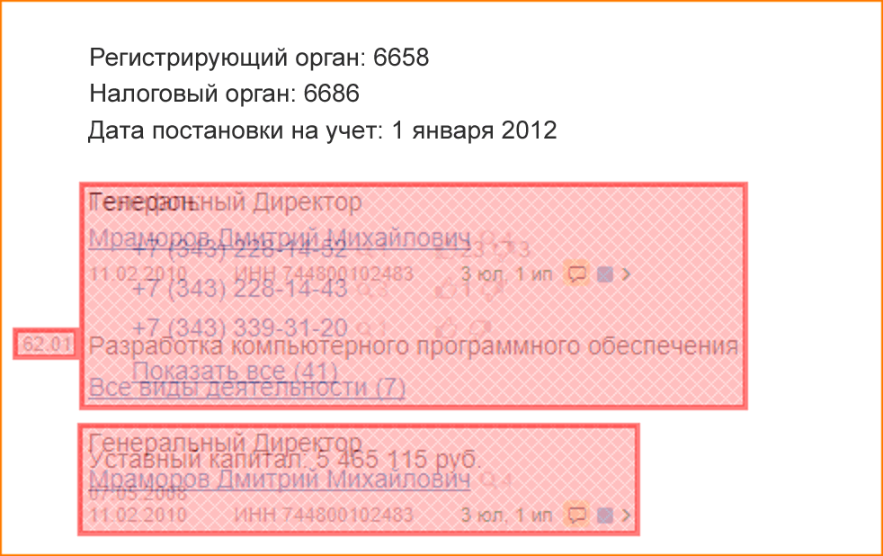

Скриншотное тестирование с использованием webdiff
Автор: Титаренко Дмитрий (СКБ Контур 2017)
webdiff
Титаренко Дмитрий
Метод пристального взгляда
Wish list
Полуавтоматический инструмент предрелизной проверки
Возможность проверить перед push’ем, что ничего не сломалось
TeamCity, агенты, сломанные тесты…
…
Релиз близко!
WebDiff
WebDiff

De facto
Поддержка Firefox, Chrome
Скриншоты страницы целиком (вертикальный скроллинг)
Изменение размеров окна и эмуляция мобильных устройств
Ожидание загрузки динамического контента
Cookies, подключение произвольных CSS / JS [WebExtension]
Просмотр/модификация HTTP-заголовков [WebExtension]
Формирование HTML-отчета для артефактов TeamCity
Pros et Cons
Live
Links
github.com/dscheg/webdiff
github.com/bslatkin/dpxdt
(Python, PhantomJS, ImageMagick)
github.com/yandex-qatools/ashot
(Yandex screenshot lib, Java)